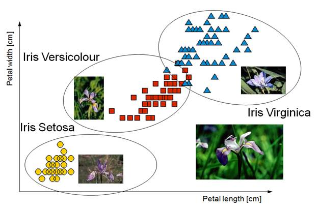

Say Hi to CNN
Table of Contents
1 神經網路解題步驟
使用神經網路解決問題可大致分為兩個步驟：「學習」與「推論」。
- 學習指使用訓練資料進行權重參數的學習
- 推論指使用學習過的參數進行資料分類
而實際的動手實作可再細分為以下幾個步驟
- 收集資料 (Gathering data)
- 準備數據 (Preparing that data)
- 選擇模型 (Choosing a model)
- 訓練機器 (Training)
- 評估分析 (Evaluation)
- 調整參數 (Hyperparameter tuning)
- 預測推論 (Prediction)
2 收集資料
2.1 資料類型
- 人工收集
- 預測股市股價: 開盤、收盤、成交量、技術指標、財務指標、籌碼指標等等
- 以物品識別:大量物品照片並給予名稱(label)
- 以注音符號手寫辨識: 大量手寫照片及其對應答案(label)
- 預測股市股價: 開盤、收盤、成交量、技術指標、財務指標、籌碼指標等等
- 現成資料集
MNIST
資料集由 0~9 的數字影像構成(如圖1)，共計 60000 張訓練影像、10000 張測試影像。

Figure 1: MNIST 資料集內容範例
- Boston housing
預測目標：房地產價格，特徵包括房地產客觀數據，如年份、平面大小 Iris
鳶尾花資料集是非常著名的生物資訊資料集之一，取自美國加州大學歐文分校的機器學習資料庫，資料的筆數為150筆，共有五個欄位：花萼長度(Sepal Length)、花萼寬度(Sepal Width)、花瓣長度(Petal Length) 、花瓣寬度(Petal Width)、類別(Class)：可分為Setosa，Versicolor和Virginica三個品種。

Figure 2: Iris資料集
Cifar-10
由深度學習大師 Geoffrey Hinton 教授與其在加拿大多倫多大學的學生 Alex Krixhevsky 與 Vinoid Nair 所整理之影像資料集, 包含 6 萬筆 32*32 低解析度之彩色圖片, 其中 5 萬筆為訓練集; 1 萬筆為測試集, 是機器學習中常用的圖片辨識資料集

Figure 3: Cifar-10
2.2 DEMO
from keras.datasets import mnist (x_Train, y_Train), (x_Test, y_Test) = mnist.load_data()
3 準備數據 (Preparing that data)
當我們在比較分析兩組數據資料時，可能會遭遇因單位的不同(例如：身高與體重)，或數字大小的代表性不同(例如：粉專1萬人與滿足感0.8)，造成各自變化的程度不一，進而影響統計分析的結果。1
資料的正規化(Normalization)是將原始資料的數據按比例縮放於 [0, 1] 區間中，且不改變其原本分佈。

Figure 4: 資料正規化
正規化有兩種常用的方法，可以將不同規模的特徵轉化為相同的規模：常態化(normalization)和標準化(standardization)：
3.1 常態化
將特徵值縮化為 0~1 間，這是「最小最大縮放」(min-max scaling)的一個特例，某一特徵值的常態化做法如下：
\[x_{norm}^i = \frac{x^i-x_{min}}{x_{max}-x_{min}}\]
若以 scikit-learn 套件來完成實作，其程式碼如下：
from sklearn.preprocessing import MinMaxScaler mms = MinMaxScaler() X_train_norm = mms.fit_transform(X_train) X_test_norm = mms.fit_transform(X_test)
3.2 標準化
雖說常態化簡單實用，但對許多機器學習演算法來說(特別是梯度下降法的最佳化)，標準化則更為實際，我們可令標準化後的特徵值其平均數為 0、標準差為 1，這樣一來，特徵值會滿足常態分佈，進而使演算法對於離群值不那麼敏感。標準化的公式如下：
\[x_{std}^i = \frac{x^i-\mu_x}{\sigma_x}\]
若以 scikit-learn 套件來完成實作，其程式碼如下：
from sklearn.preprocessing import StandardScaler stdsc = StandardScaler() X_train_std = stdsc.fit_transform(X_train) X_test_std = stdsc.transform(X_test)
3.3 DEMO
x_train = x_train.reshape(60000, 784) x_test = x_test.reshape(10000, 784) x_train = x_train.astype('float32') x_test = x_test.astype('float32') x_train /= 255 x_test /= 255 y_TrainOneHot = np_utils.to_categorical(y_Train) y_TestOneHot = np_utils.to_categorical(y_Test)
4 選擇模型 (Choosing a model)
當數據都進行整理後，接下來就是要選擇訓練用的模型，像是決策樹、LSTM、RNN等等都是機器學習中常使用的訓練模型，其中目前較常拿來訓練股市的是「LSTM」，中文叫做長短期記憶，是屬於深度學習中的一個模型。
4.2 DEMO
- LSTM
model = Sequential() model.add(LSTM(128, input_shape=(x_train.shape[1:]), activation='relu', return_sequences=True)) model.add(Dropout(0.2)) model.add(LSTM(128, activation='relu')) model.add(Dropout(0.1)) model.add(Dense(32, activation='relu')) model.add(Dropout(0.2)) model.add(Dense(10, activation='softmax'))
- CNN
model = Sequential() model.add(Dense(units=128, input_dim=784, kernel_initializer='normal', activation='relu')) model.add(Dense(64, activation='relu') model.add(Dense(units=10, kernel_initializer='normal', activation='softmax'))

Figure 5: MNIST-NeuralNet
5 訓練機器 (Training)
選擇好訓練模型後，再來要將訓練集資料丟進去模型中做訓練，每層要放多少神經元、要跑幾層等等都會影響模型訓練出來的結果，這部分只能靠經驗跟不斷嘗試去學習，或是上網多爬文看別人怎麼撰寫訓練模型
在真正訓練前應該再設定好模型的loss function, optimizer。
5.2 DEMO
- LSTM
# ptimizer, loss function model.compile(optimizer=Adam(lr=0.001), loss='categorical_crossentropy', metrics=['accuracy']) model.fit(x_train, y_train, epochs=3, validation_data=(x_test, y_test))
- CNN
# optimizer, loss function model.compile(loss='categorical_crossentropy', optimizer='adam', metrics=['accuracy']) model.fit(x=x_Train, y=y_TrainOneHot, validation_split=0.2, epochs=5, batch_size=30, verbose=2)
6 評估分析 (Evaluation)
當模型訓練完成後，接下來就是判斷該模型是否有過度擬合(overfitting)，這裡就是帶入測試集的資料進行評估，也可以嘗試利用交叉驗證的方式進行模型的擬合性判斷，以及利用RESM、MSE等統計計算來判斷模型的準確度
scores = model.evaluate(x_Train, y_TestOneHot)
7 調整參數 (Hyperparameter tuning)
到這大致上模型已經完成了50%，最後的一步就是進行參數的微調，我們也稱為「超參數 (Hyperparamters)」，讓整個模型更加的精準，但也不能過度的調整，因為會造成overfitting的結果，這個取捨就只能依照無窮盡的反覆迭帶去尋找了，這部分也是相對較耗時間的地方
7.1 model參數
- 調整model架構: [機器學習 ML NOTE] CNN演化史(AlexNet、VGG、Inception、ResNet)+Keras Coding
- loss function: https://keras.io/api/losses/
- optimizers: https://keras.io/api/optimizers/
7.2 Hyperparameters
- batch size：一次迭代放入進行訓練或測試的影像數量。
- epoch：一種單位，所有影像皆被計算過1次後即為1 epoch
- CNN筆記 - 超參數 (Hyperparamters)
8 預測推論 (Prediction)
到此，模型已經正式完成，但對於全新沒影響過的數據則是一個未知數，由於在上方訓練模型中，我們不論是訓練集或是測試集都是被模型所影響過的，如果過度擬合，那麼未來丟入新的資料就很可能無法那麼精準，這部分就只能不斷丟入新資料來推論我們模型的預測能力是否有泛化
prediction = model.predict_classes(x_Test4D_normalize) print(prediction[:10])
9 DEMO 1: Regression
9.1 產生數據
import matplotlib.pyplot as plt import numpy as np x = np.random.uniform(0.0, 3, (2000)) y = 78 + 7.8*x + np.random.normal(0.0, 3, len(x)) plt.scatter(x, y) x_Train = x[:1500] x_Test = x[1500:] y_Train = y[:1500] y_Test = y[1500:]
9.2 建立model
from keras.models import Sequential from keras.layers import Dense from keras.layers import Dropout # A simple regression model model = Sequential() model.add(Dense(4, input_shape=(1,))) model.add(Dropout(0.5)) model.add(Dense(8, input_shape=(1,))) model.add(Dropout(0.5)) model.add(Dense(1, input_shape=(1,))) model.compile(loss='mse', optimizer='rmsprop')
9.3 訓練model
# The fit() method - trains the model train_history = model.fit(x=x_Train, y=y_Train, validation_split=0.2, epochs=1000, batch_size=200, verbose=0)
9.4 查看訓練過程
print(train_history.history) print(train_history.history.keys()) import matplotlib.pyplot as plt plt.title('Train History') plt.ylabel('loss') plt.xlabel('Epoch') plt.plot(train_history.history['loss']) plt.plot(train_history.history['val_loss']) plt.show()
9.5 評估model
# The evaluate() method - gets the loss statistics score = model.evaluate(x_Test, y_Test, batch_size=200) print(score)
9.6 預測結果
# The predict() method - predict the outputs for the given inputs model.predict(np.expand_dims(x_Test[:3],1)) print(x_Test[:3]) print(y_Test[:3]) model.predict(x_Test[:3])
9.7 調整model/參數
- model架構
- loss function
- optimizer
- hyper parameters
- #1
# A simple regression model model = Sequential() model.add(Dense(4, input_shape=(1,))) model.add(Dense(8, input_shape=(1,))) model.add(Dense(4, input_shape=(1,))) model.add(Dense(1, input_shape=(1,))) model.compile(loss='mean_squared_error', optimizer='rmsprop') #mean_squared_logarithmic_error #mean_absolute_percentage_error
- #2
model = Sequential() model.add(Dense(4, input_shape=(1,))) model.add(Dense(8, input_shape=(1,))) model.add(Dense(16, input_shape=(1,))) model.add(Dense(32, input_shape=(1,))) model.add(Dense(16, input_shape=(1,))) model.add(Dense(4, input_shape=(1,))) model.add(Dense(1, input_shape=(1,))) model.compile(loss='mse', optimizer='rmsprop')
10 練習: Regression
10.1 數據
import numpy as np # Seed the random number generator for reproducibility np.random.seed(0) x_data = np.linspace(-10, 10, num=2000) y_data = 2.9 * np.sin(1.5 * x_data) + np.random.normal(size=len(x_data)) plt.scatter(x_data, y_data)

Figure 6: CNN練習